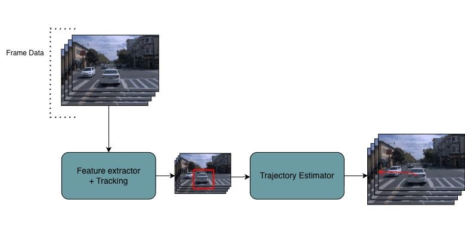
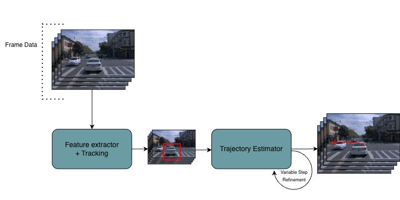
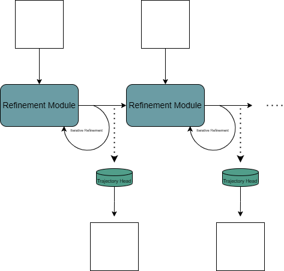
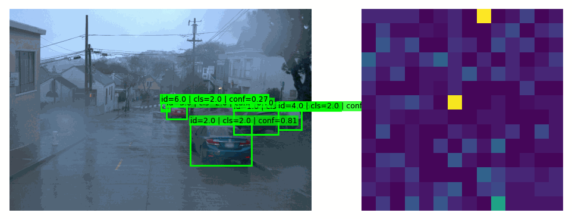
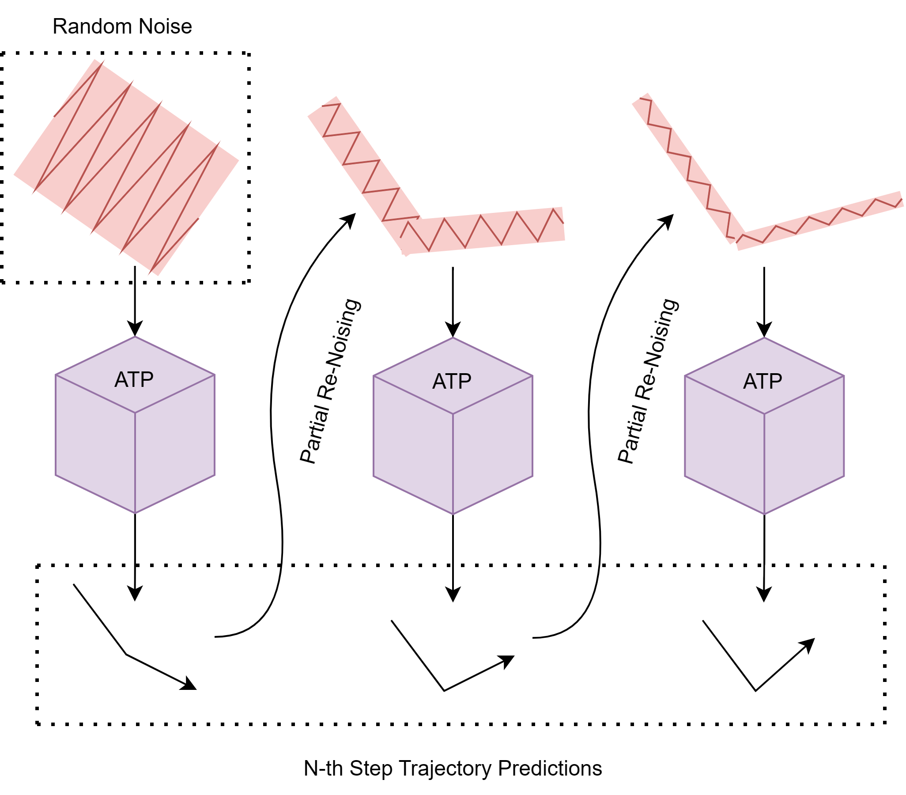
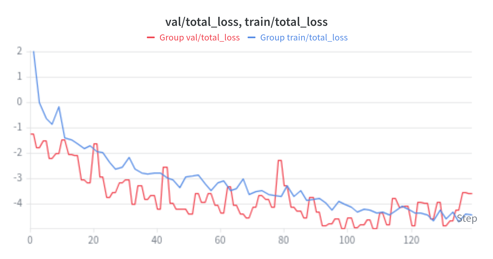
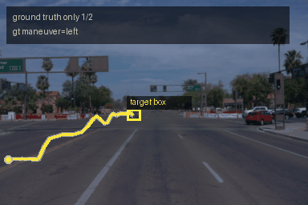
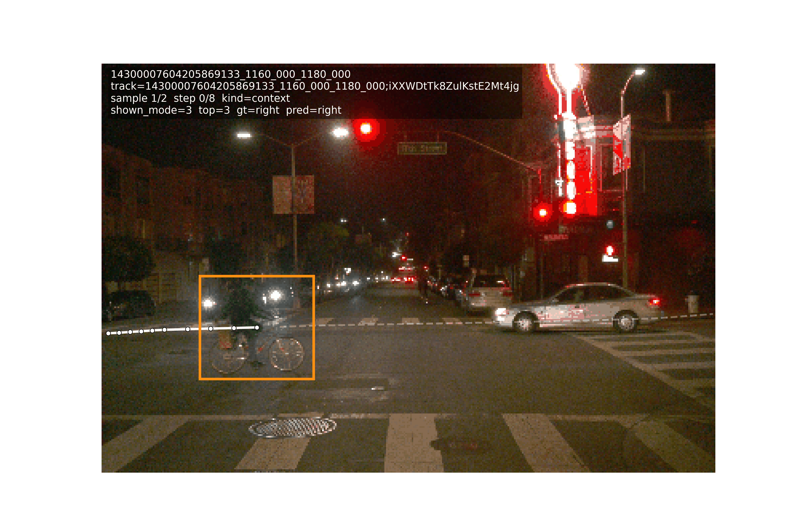

I. Introduction
Accurate trajectory prediction is a key technique in autonomous vehicle control systems. In a standard pipeline, models are given sensor data of their environment and agent positions in order to forecast their future positions or velocities. Furthermore, downstream tasks and hardware availability impose hard constraints on the performance and size of the model. This is a complex problem that has received significant attention, as effective obstacle avoidance is the difference between a safe and unsafe autonomous navigation system.
We introduce a model that enables accurate trajectory prediction for lightweight machinery using a single RGB sensor. Our work consists of the following key features:
- Anytime querying: We introduce an anytime query method that allows our model to meet downstream-defined latency requirements through using a varying amount of refinement steps.
- Probabilistic trajectory modeling: We model future trajectories as a mixture of Gaussians, enabling an explicit and structured representation of multimodal uncertainty. This allows our model to capture multiple plausible future trajectories for a given agent.
Anytime querying is the key feature of our model, unlike existing methods, we defined our model to be able to run for a variable amount of iterations in order to continuously refine its predictions. Users can choose to run the model for a limited amount of iterations for low-latency but less confident predictions, or allow the model to run for longer in order to receive more accurate predictions.
This mechanism is particularly relevant for real time use-cases in low-capability hardware, such as embedded systems on UAVs, as the available compute budget can vary depending on the control frequency or the urgency of the navigation decision.
Standard Trajectory Predictive Pipeline

Variable Latency

II. Related Works
Historically, classical approaches to trajectory prediction often rely on state estimation techniques such as Kalman filters, which assume linear dynamics and Gaussian noise, but struggle with complex, multimodal behavior [1]. Consequently, newer architectures such as neural networks [2] [3] and more recently transformers [4] [5] have become widely used in the field of trajectory planning.
Additionally, with the rise of autonomous driving, a multitude of contests and datasets for object prediction have been created [6] [7] [8] [9]. The Waymo Open Dataset is a collection of public datasets that aim to “aid the research community in investigating a wide range of interesting aspects of machine perception and autonomous driving technology” [9] . In our case the Motion Dataset is the most suitable one with object trajectories and corresponding 3D maps for 103’354 road segments, corresponding to 574 hours of data.
This has led to many new state-of-the-art algorithms which address this challenge by outputting multimodal trajectory predictions. Specifically, our model is inspired by the following areas of work:
Iterative refinement: A recent direction in motion prediction consists in predicting the final trajectory not as a single forward pass but generating a first coarse estimate and then progressively correcting and improving it with more context information. SmartRefine is close to this idea: it refines an initial trajectory by retrieving relevant map and agent context around the trajectory anchors [10]. Similarly, TrackSSM [11] stacks decoder layers to refine trajectories step by step.
Mixture Density Networks: MDNs are models which output mixed gaussians, this includes algorithms such as Wayformer [4]. However, training them has been proven to be difficult in practice due to their tendency to collapse into a single mode. As a result, several different methods have been suggested, including a "best-of-N" loss function [4]., where only the best prediction is considered, encouraging the model to predict a diverse range of trajectories, which we adapt in our work.
Transformer-based models:
Wayformer
[4]
is a family of attention-based architectures for trajectory prediction.
Scenes are first treated by the Encoder to create a useful representation.
Then, the decoder is fed both learned queries and the encoder state to produce the
trajectories. Early fusion of the modality has proven to be efficient by matching
state-of-the-art performances on the Waymo Motion Dataset. The predictor outputs a
Mixture of Gaussians to represent the plausible trajectories agents may take.
ASTRA
[5]
is also a transformer-based architecture combining scene and agent information
to perform pedestrian trajectory prediction. A U-net feature extractor is used
to extract scenes latent representations along side a graph transformer encoder which models
the social interactions of the agents. These representations are then concatenated and
either fed to a CVAE
[12]
to generate stochastic predictions or through a MLP for a
deterministic output.
Diffusion Models: Diffusion-based trajectory prediction methods model future trajectories through iterative denoising processes and have recently demonstrated strong performance on multimodal motion forecasting tasks [13]. These methods provide flexible generative modeling capabilities for complex trajectory distributions.
III. Methodology

Anytime Trajectory Model pipeline.
Our task is formally defined as follows. Given a sequence of RGB frames and a target agent, we aim to learn a distribution \( P(\tau) \) where \( \tau \in \mathbb{R}^{t \times 3} \) represents a trajectory as a sequence of \( (x, y, z) \) coordinates over \( t \) timesteps. Here, \( x \) and \( y \) denote spatial position, while \( z \) represents the log size of the agent's bounding box — used as a proxy for distance. The distribution \( P \) is modeled as a Gaussian mixture with \( N \) modes, allowing the model to capture the \( N \) most likely trajectories a given agent may follow. In this work, we set \( N=8 \)
Critically, inference must support variable-length computation: the model should be queryable at any point during processing, trading speed for accuracy depending on the deployment constraints. To achieve this, we build on Astra [3] as our core architectural inspiration, and extend it with an iterative refinement process that enables continuous improvement of predicted trajectories over time.
Our Model: Anytime Trajectory Predictor (ATP)
Our ATP architecture is heavily inspired by Astra [5] , a transformer architecture trained on pedestrian trajectory prediction from rgb images: it was trained on bird’s eye and ground level views of the scene. Astra has very low latency and has a limited parameter size, this combined with its generalizability across views was the reason we selected Astra as the inspiration for our model.
We did explore other architectures like GRU [14] and GNN [[15],] based models as they have also shown in the recent past to be promising models for this specific task [2] [3] . We decided to pivot at a certain stage to focus only on training and evaluating the transformer architecture, as it had the best performance without significant tradeoffs in latency or model size.
Like Astra, ATP is divided into a scene extractor and a prediction head. The scene extractor is a pretrained and then fine-tuned model whose learning objective is detection. The extractor’s purpose is to identify the targets whose trajectory is to be predicted, and provide a rich latent space representation of the whole scene. Intuitively it is not enough to know about all the agents in an environment, but also information about the environment itself, such as street and sidewalk locations.
The extracted features are attended to by a multihead attention capturing all the different ways in which agents can interact (social interaction/spatial proximity were two captured by ASTRA). Our prediction head is a diffusion transformer [16] , whose trajectory predictions are fed to a GNN. Anytime inference is handled by the diffusion layer. By calling the sampler an arbitrary amount of times the output can be made cleaner at the cost of extra inference steps. The final GMM is a simple projection from trajectory points and trajectory hidden states to a set averages and converiance matrix to construct our mixed gaussian model.
Feature Extractor

Feature extractor detections (left) and the corresponding feature map, averaged across spatial dimensions (right).
YOLO26 nano [17] for object detection and ByteTrack [18] for tracking form the feature extraction portion of ATP. It is responsible for processing raw RGB inputs and extracting relevant information about the scene, such as:
- Bounding box information for each detected object.
- Object IDs that are consistent across frames.
- Object class labels.
- Confidence scores for each detection.
Iterative Refinement
To enable anytime refinement in ATP, we adopt an iterative denoise-refinement algorithm. Beginning from a fully random trajectory, the model progressively refines its prediction by conditioning on scene context at each step. The algorithm works as such:
- Initialize a trajectory by sampling from a standard Gaussian distribution.
- Pass this trajectory into ATP, conditioned on scene information, to produce a refined prediction.
- If the refinement budget is exhausted, return the current prediction. Otherwise, corrupt the prediction with Gaussian noise according to a scheduled noise level and repeat from step 2.
The noise scheduler controls the magnitude of noise injected at each iteration. By gradually reducing this noise level across refinement steps, the model is able to incrementally improve its prediction rather than regenerating a trajectory from scratch at every step. This allows ATP to be queried at any point during refinement by trading computation for accuracy, making it well-suited for latency-sensitive deployment scenarios.

Training
ATP was trained on the Waymo Motion Dataset [9]. At each training step, the model received features extracted from the previous [N] frames, including bounding box information and scene-level context from the scene extractor.
The loss function is defined as follows:
It consists of three key components, each weighted by a \( \lambda \) term:
- Negative Log-Likelihood Loss(\( \lambda = 0.1\)) — penalizes the model when the ground truth trajectory is assigned low probability under the predicted distribution.
- minADE(minimum Average Displacement Error)(\( \lambda = 1\)) — The average error between the points of the predicted trajectory, and the predicted mode closest to that trajectory. Discourages mode collapse,* by rewarding the model for its best mode, while avoiding punishing it for any modes which may be further away for the ground truth. prediction.
- Smoothness Loss(\( \lambda = 0.1\)) — enforces approximate physical plausibility by encouraging trajectories that are temporally smooth and consistent with realistic motion dynamics. Is defined to be the average acceleration. By minimizing this, the model avoids predicting trajectories consting of unnatural velocities or sudden jerks.
The loss curves are displayed below, our model was trained for [N] epochs on a 2 NVIDIA V100 GPU, taking around [H] hours.

*Mode collapse is a phenomenon common in Mixture Density Networks in which all predicted trajectories collapse to a single output, reducing the diversity and usefulness of the predictions.
IV. Results
In this section, we display both quantitative results to benchmark the performance of our model, as well as qualitative trajectory predictions to explore strengths, biases, and areas of improvement for the model. All results are evaluated using a held out portion of the Waymo Dataset.
Qualitative
We first evaluated model performance through qualitative analysis on sample videos. Below, we visualize ATP's most likely predicted trajectory for a vehicle approaching an intersection:

Frame 1
ATM tracks the movement of an incoming car, and over 8 iterations it refines its output to predict the car will continue to go straight..
Quantitative
We additionally recorded quantitative results to numerically verify the effectiveness of ATP. Our evaluation focused on three key properties:
- Minimum Average Displacement Error (MinADE) — What is the smallest mean error between our predicted trajectories and the ground truth?
- Maximum Average Displacement Error (MaxADE) — What is the maximum mean error between our predicted trajectories and the ground truth? Ideally, this value should be low, similar to MinADE, yet not exactly the same. If this value is too close to MinADE, that suggests mode collapse, where our model's modes are always nearly identical
- Negative Log Likelihood (NLL) — How likely is the ground truth given the probability density function our model outputs(lower is better).
| Metric | 1 Refinement Step Baseline |
4 Refinement Steps | 8 Refinement Steps |
|---|---|---|---|
| MinADE | 0.0856 | 0.0808 -5.6% | 0.0798 -6.8% |
| MaxADE | 0.2135 | 0.2050 -4.0% | 0.1965 -8.0% |
| NLL | -68.58 | -71.88 -4.8% | -72.45 -5.6% |
| Latency (ms) | 4.09 | 9.99 +144.0% | 17.60 +329.8% |
Latency naturally increases with the number of refinement steps: the prediction head runs in 4 ms with one step, 10 ms with four steps, and 18 ms with eight steps. Since YOLO11n has been measured under 10 ms on lightweight embedded hardware using an NVIDIA Jetson Orin NX 16G at a 640-pixel image size [19], our compiled 4-step model keeps the full pipeline under 24 ms, which is fast enough for more than 40 FPS in principle.
Additional Examples
We additionally present qualitative examples to further illustrate the strengths and weaknesses of our model. In the examples below, we visualize frame-by-frame predictions with 8 refinement steps.



Attempted Failiure Points Improvements:
Below, we discuss several solutions we explored in an attempt to address the above limitations. Although these approaches ultimately failed to work as intended, documenting them remains valuable so that future work aimed at improving this model can avoid approaches that proved ineffective.
Differing Architectures: In addition to the transformer-based approach, we also experimented with Graph Neural Networks (GNN) [15], and GRU [14] style models. However, both approaches were consistently outperformed by the transformer architecture used in ATP.
Polynomial Interpolation: We additionally explored a model that predicted the coefficients of a polynomial interpolation over future trajectory points. The goal of this approach was to generate trajectories that were more physically constrained. However, this approach encountered two major issues. First, the polynomials fit to the ground truth data, to be used as training targets, frequently became overfitted. Even with regularization, these often had large polynomials and unnatural behavior between trajectory points. Second, multiple distinct polynomials can reasonably interpolate the same set of points, creating instability during training and making optimization difficult.
Best-of-N Loss Function: Rather than using the standard negative log-likelihood (NLL) loss, we experimented with a “best-of-N” objective that minimized only the lowest NLL of the ground truth given a signal predicted. However, this did not provide a significant improvement in trajectory diversity. While it produced a small increase in diversity, this benefit was outweighed by the loss of the model’s ability to represent the likelihood weights associated with each predicted mode.
V. Conclusion and Limitations
In this work, we presented ATP, an anytime trajectory prediction model capable of predicting object trajectories from RGB video input across varying latency budgets. Qualitatively, we demonstrate that our model can produce feasible trajectories for moving objects. Quantitatively, however, our model does not appear to produce more accurate modes through the iterative refinement process that forms the core of our anytime algorithm. Despite this, our model produced one notable and unexpected result: rather than improving predictive accuracy with each refinement step, it grew increasingly confident in the correct prediction. While this was not the original intended goal, it does demonstrate the viability of our approach. It also suggests that with further tuning, sequential refinement could be leveraged to generate progressively more accurate trajectories over time, rather than solely increasing confidence in the current prediction.
Outside of the above note, limitations that we would like to address in future works are two-fold: 1. addressing mode collapse, 2. Expanding to additional scenarios. Regarding the first point, our model frequently exhibited a tendency to collapse such that all predicted modes converged to nearly identical outputs. While this behavior is appropriate in certain cases, it reduces the model's utility by failing to capture the full range of plausible object motions. Secondly, we aim to adapt our model for applications beyond autonomous driving. As our model was trained exclusively on the Waymo dataset, its predictions are currently limited to cars, cyclists, and pedestrians. Extending its applicability to domains such as UAV navigation would require finetuning on diverse scenarios and environmental conditions, yielding environment-specific model variants.